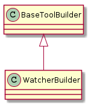

class WatcherTypes(object):
"""
The names of the valid watcher types
"""
__slots__ = ()
logfollow = 'logfollow'
logcat = "logcat"
adblogcat = 'adblogcat'
rssi = "rssi"
device = 'device'
procnetdev = 'procnetdev'
battery = 'battery'
cpu = 'cpu'
pingwatcher = 'pingwatcher'
# end class WatcherTypes
watcher_builder = {WatcherTypes.adblogcat:LogcatWatcherBuilder,
WatcherTypes.logcat:LogWatcherBuilder,
WatcherTypes.rssi:RssiPollerBuilder,
WatcherTypes.device:DevicePollerBuilder,
WatcherTypes.procnetdev:ProcnetdevPollsterBuilder,
WatcherTypes.battery:BatteryWatcherBuilder,
WatcherTypes.cpu:CpuPollsterBuilder,
WatcherTypes.logfollow:LogFollowerBuilder,
WatcherTypes.pingwatcher:PingWatcherBuilder}

| WatcherBuilder(*args, **kwargs) | builds a master logwatcher | ||
| WatcherBuilder.watcher_ids |
|
||
| WatcherBuilder.watchers |
|
||
| WatcherBuilder.product |
|
||
| WatcherBuilder.parameters | Returns the previous_parameters |